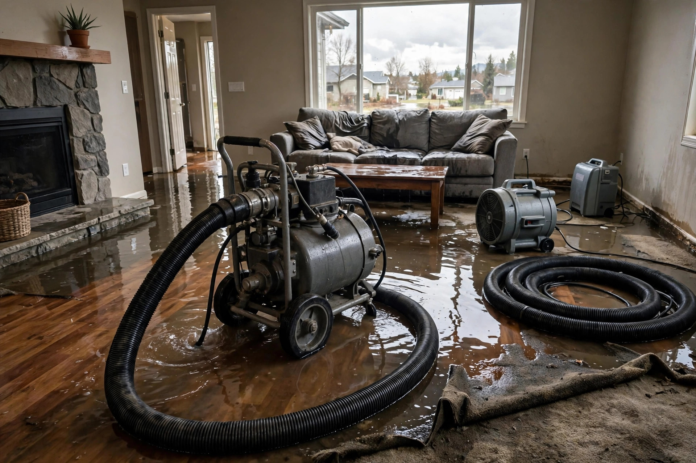

Emergency Water Extraction in Kuna, ID
A burst pipe at 2 a.m., a water heater letting go, irrigation water finding your foundation — standing water does its worst damage in the first hours. Extraction crews pull it out fast, then set drying equipment so the 24-to-48-hour mold window never opens.
Where emergency water comes from here
Winter pipe bursts
Exterior-wall plumbing and unheated garage runs freeze in cold snaps. The burst often reveals itself as a ceiling stain or a flooded laundry room.
Water heater failures
Tanks in garages and utility closets corrode out. Forty-plus gallons across a slab, wicking into every adjacent wall base.
Irrigation-season intrusion
Canals run April to October around Kuna. Breaks and overtopping push water across hardpan toward foundations — it does not soak in, it arrives.
Appliance hoses
Washing-machine supply lines and dishwasher connections fail without warning. Upstairs laundry rooms turn into whole-house events.
The first hours decide the bill
Water wicks upward into drywall, seeps under flooring, and soaks insulation fast. Every hour of standing water expands the repair scope.
Extraction window
Standing water pulled out. Drywall wicking stops where the waterline was. Most flooring can still be saved.
Drying phase
Air movers and dehumidifiers run. Moisture readings track progress in walls, subfloor, and slab.
Mold threshold
The CDC's growth window. Dry by now and the job stays a water job — miss it and it becomes a mold job too.
What to do before we arrive
- Shut off the water main if a pipe or appliance is the source
- Cut power to flooded areas at the breaker — water and electricity do not mix
- Move valuables, electronics, and documents to dry ground
- Take photos and video for your insurance claim
- Do not use a household vacuum on standing water
- Open windows if weather allows, to start air movement
What extraction alone cannot fix
Pulling water out is the emergency step. These follow-ups matter just as much.
Drying verification
Surfaces can look dry while wall cavities and subfloors stay wet. Pin-meter readings — not touch — decide when drying is done.
Hidden mold check
Water that sat over 48 hours may have started growth inside walls. Opened cavities get inspected before close-up.
Source repair
Extraction removes water; it does not fix the burst pipe, failed heater, or grading problem. The source gets addressed in the same job.
Material replacement
Pad, swollen baseboards, and compromised drywall do not recover. They are removed and replaced, not dried in place.
A 2 a.m. call
Typical scenario (illustrative example — not a past job)
A Kuna homeowner wakes to water across the laundry room floor — the washing-machine hot supply line split overnight. By the time the crew arrives, water has wicked a foot up the drywall and under the hallway laminate. Extraction pulls the standing water in under an hour; the wet drywall base gets flood-cut the same visit, and drying equipment runs for three days with daily moisture checks.
Water out, drying started
Call now — extraction begins on arrival, and the mold clock never gets a chance to start.
Open 24 hours · Kuna and the Treasure Valley